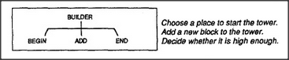
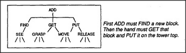
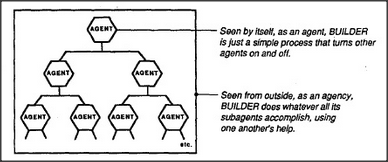

Imagine a child playing with blocks, and imagine that this child's mind contains a host of smaller minds. Call them mental agents. Right now, an agent called Builder is in control. Builder's specialty is making towers from blocks.
Our child likes to watch a tower grow as each new block is placed on top. But building a tower is too complicated a job for any single, simple agent, so Builder has to ask for help from several other agents:
In fact, even to find another block and place it on the tower top is too big for a job for any single agent. So Add, in turn, must call for other agents' help. Before we're done, we'll need more agents than would fit in any diagram.
Why break things into such small parts? Because minds, like towers, are made that way — except that they're composed of processes instead of blocks. And if making stacks of blocks seems insignificant — remember that you didn't always feel that way. When first you found some building toys in early childhood, you probably spent joyful weeks of learning what to do with them. If such toys now seem relatively dull, then you must ask yourself how you have changed. Before you turned to more ambitious things, it once seemed strange and wonderful to be able to build a tower or a house of blocks.
Yet, though all grown-up persons know how to do such things, no one understands how we learn to do them! And that is what will concern us here. To pile up blocks into heaps and rows: these are skills each of us learned so long ago that we can't remember learning them at all. Now they seem mere common sense — and that's what makes psychology hard. This forgetfulness, the amnesia of infancy, makes us assume that all our wonderful abilities were always there inside our minds, and we never stop to ask ourselves how they began and grew.
We found a way to make our tower builder out of parts. But Builder is really far from done. To build a simple stack of blocks, our child's agents must accomplish all these other things.
See must recognize its blocks, whatever their color, size, and place — in spite of different backgrounds, shades, and lights, and even when they're partially obscured by other things.
Then, once that's done, Move has to guide the arm and hand through complicated paths in space, yet never strike the tower's top or hit the child's face.
And think how foolish it would seem, if Find were to see, and Grasp were to grasp, a block supporting the tower top!
When we look closely at these requirements, we find a bewildering world of complicated questions. For example, how could Find determine which blocks are still available for use? It would have to understand the scene in terms of what it is trying to do. This means that we'll need theories both about what it means to understand and about how a machine could have a goal. Consider all the practical judgments that an actual Builder would have to make. It would have to decide whether there are enough blocks to accomplish its goal and whether they are strong and wide enough to support the others that will be placed on them.
What if the tower starts to sway? A real builder must guess the cause. It is because some joint inside the column isn't square enough? Is the foundation insecure, or is the tower too tall for its width? Perhaps it is only because the last block was placed too roughly.
All children learn about such things, but we rarely ever think about them in our later years. By the time we are adults we regard all of this to be simple common sense. But that deceptive pair of words conceals almost countless different skills.
Common sense is not a simple thing. Instead, it is an immense society of hard-earned practical ideas — of multitudes of life-learned rules and exceptions, dispositions and tendencies, balances and checks.
If common sense is so diverse and intricate, what makes it seem so obvious and natural? This illusion of simplicity comes from losing touch with what happened during infancy, when we formed our first abilities. As each new group of skills matures, we build more layers on top of them. As time goes on, the layers below become increasingly remote until, when we try to speak of them in later life, we find ourselves with little more to say than I don't know.
We want to explain intelligence as a combination of simpler things. This means that we must be sure to check, at every step, that none of our agents is, itself, intelligent. Otherwise, our theory would end up resembling the nineteenth-century chessplaying machine that was exposed by Edgar Allan Poe to actually conceal a human dwarf inside. Accordingly, whenever we find that an agent has to do anything complicated, we'll replace it with a subsociety of agents that do simpler things. Because of this, the reader must be prepared to feel a certain sense of loss. When we break things down to their smallest parts, they'll each seem dry as dust at first, as though some essence has been lost.
For example, we've seen how to construct a tower-building skill by making Builder from little parts like Find and Get. Now, where does its knowing-how-to-build reside when, clearly, it is not in any part — and yet those parts are all that Builder is? The answer: It is not enough to explain only what each separate agent does. We must also understand how those parts are interrelated — that is, how groups of agents can accomplish things.
Accordingly, each step in this book uses two different ways to think about agents. If you were to watch Builder work, from the outside, with no idea of how it works inside, you'd have the impression that it knows how to build towers. But if you could see Builder from the inside, you'd surely find no knowledge there. You would see nothing more than a few switches, arranged in various ways to turn each other on and off. Does Builder really know how to build towers? The answer depends on how you look at it. Let's use two different words, agent and agency, to say why Builder seems to lead a double life. As agency, it seems to know its job. As agent, it cannot know anything at all.
When you drive a car, you regard the steering wheel as an agency that you can use to change the car's direction. You don't care how it works. But when something goes wrong with the steering, and you want to understand what's happening, it's better to regard the steering wheel as just one agent in a larger agency: it turns a shaft that turns a gear to pull a rod that shifts the axle of a wheel. Of course, one doesn't always want to take this microscopic view; if you kept all those details in mind while driving, you might crash because it took too long to figure out which way to turn the wheel. Knowing how is not the same as knowing why. In this book, we'll always be switching between agents and agencies because, depending on our purposes, we'll have to use different viewpoints and kinds of descriptions.